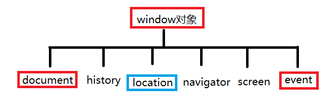

body, td { font-family: 微软雅黑; font-size: 12pt; }
梳理 ：
数学对象 ： Math.random()
获取任意区间值 ：
function rand( min,max ){
return Math.round( Math.random()*(max-min) ) + min
}
随机验证码 48--122
随机颜色
function rand(min,max){//随机数
return Math.round( Math.random()*(max-min) + min );
}
function getColor(){//随机颜色
var r = rand(0,255);
var g = rand(0,255);
var b = rand(0,255);
var color = "rgb(" + r + "," + g + "," + b + ")"
return color;
}
日期对象 ：
定义
new Date("2018-09-09") getMonth() + 1
dateToString()
stringToDate()
时间差 getTime()
设置时间 setDate()
定时器
2、BOM 模型
BOM ： broswer object model 浏览器对象模型 【注】window对象是BOM中最大的对象 broswer:浏览器 model:模型

window对象常见的属性和方法 ：【注】document,history,location,navigator,screen,event是window下的六大内置对象
三个弹出框（特点 ： 阻塞浏览器代码执行） ：
alert() 弹出框
confirm() 确认框 点击确定 返回true 点击取消 返回 false confirm:确定
prompt(“请输入一个数”,“默认值”) 输入框 点击确定，返回输入的值 点击取消返回null
【注】 在表示判断的情况下（布尔环境），下面表示真假情况 ：
1、所有数字为真 0为假
2、所有字符串为真 空字符串为假
3、null 和 undefined 为假
4、所有对象为真
5、所有函数为真
两个定时器 ：
setInterval(执行任务，间隔时间) 连续执行的定时器 clearInterval(定时器的名字)【注】关闭定时器，需给定时器起个名字
setTimeout(执行任务,间隔时间) 用法同上 只执行一次 延时性 几秒后.... clearTimeout() 停止定时器
一个弹出窗口方法 ： open(“路径”,"_blank","弹出窗口外观") 返回值 是 弹出的子窗口
外观 ： width height left top 【注】外观主要设置这几个属性，其他属性存在兼容问题
open() 特点 ： 子窗口和父窗口之间可以互相操作。
【注】： 子串口和父窗口需要在同一个服务器下运行，即地址栏内前缀一样，HB自带服务器，但不是很稳定，但够open用了，直接打开的路径是绝对路径，父子窗口没有关系，所以不能互相操作
opener ： 根据子窗口查找父窗口
close() : 关闭窗口
closed ： 判断某个窗口是否被关闭 没有关闭 返回false
定时器 都是 异步 执行
异步 ： 非阻塞模式
window 对象的属性和方法调用 都可以省略window. 直接使用
所有的全局变量都是window对象的属性
所有的全局函数都是window对象的方法
3、location 地址对象 location:位置
页面跳转 ：
location.href 可读写 获取地址栏信息 也可以设置地址栏信息
location.assign("url") assign:赋值;分配
location.replace("url") 替换了页面内容后 不可以后退 replace:替换
页面刷新 ：
location.reload();
4、history 历史记录对象
history.go(1)/forward() 前进
history.go(-1)/back() 后退
history.go(0) 刷新
5、document 文档对象 ： 找对象 【注】：相当于html，比body大一级所以可以通过document.body找到body元素

document.write() 打印的信息会将原页面的内容覆盖
查找页面对象的方法 ：
document.querySelector(css的选择器) 根据选择器查找一个元素 query:查询，疑问 selector:选择器
var oBtn = document.querySelector("input");
【注】 方法接受一个CSS选择器作为参数，返回匹配该选择器的元素节点。如果有多个节点满足匹配条件，则返回第一个匹配的节点。如果没有发现匹配的节点，则返回null。
document.querySelectorAll(css选择器); 查找的结果是一个类数组
var ipt = document.querySelectorAll("input")[0];
document.getElementsByClassName(类名); 查找的结果是一个类数组 document.getElementsByClassName("aa")
var dels = document.getElementsByClassName("del");
document.getElementsByTagName();
var inputs = document.getElementsByTagName("input"); collection:采集，聚集
方法返回所有指定HTML标签的元素，返回值是一个类似数组的HTMLCollection对象，可以实时反映HTML文档的变化。如果没有任何匹配的元素，就返回一个空集。
document.getElementsByName(); 查找的结果是一个类数组 【注】：通过表单的name属性找到元素
<input type="text" name="s"/>
var ipt = document.getElementsByName("s")[0];
document.getElementById();
doument.title 找到title 标签
document.head 找到head标签
document.body 找到body标签
document.documentElement 查找根标签
alert(document.documentElement)//[object HTMLHtmlElement]查找document的根元素
6、页面元素的操作
操作属性：
obj.属性 获取 obj.属性 = 值
操作样式:
obj.style.样式 = 值
obj.style.cssText = "width:100px;height:100px;...."
【注】:obj.style.cssText = "中直接写css属性，（和在style中写法一样）"，所以在obj.style.cssText 中不可以调用script函数，并且用这句话会覆盖之前的css样式
obj.className = "类名"
操作内容：
innerHTML ： 内容中如果有标签，可以被浏览器解析
innerText ： 设置纯文本 （火狐不支持 textContent）内容中如果有标签，不可以被浏览器解析，当做纯文本使用
outerHtml : 会替换标签
<ul>
<li>葫芦娃1</li>
<li>葫芦娃2</li>
<li>葫芦娃3</li>
<li>葫芦娃4</li>
<li>葫芦娃5</li>
<li>葫芦娃6</li>
<li>葫芦娃7</li>
</ul>
<script>
var oUl = document.querySelector("ul");
alert(oUl.children[2])
oUl.children[2].outerHTML = "<b>我是葫芦娃</b>"
oUl.children[2].innerHTML += "，我要救爷爷"
</script>
结果：
- 葫芦娃1
- 葫芦娃2
- 葫芦娃4
- 葫芦娃5
- 葫芦娃6
- 葫芦娃7
我是葫芦娃，我要救爷爷